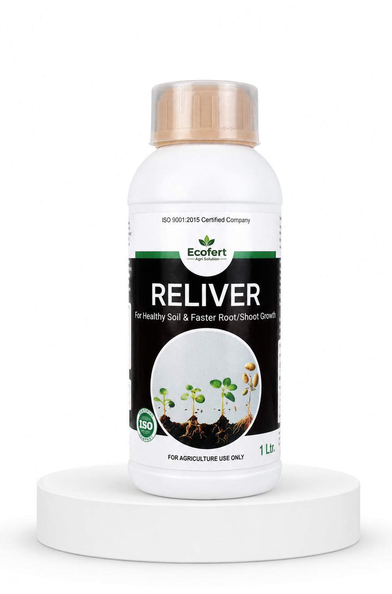

Root & Shoot PromotorReliver
Humic acid, fulvic acid, amino acids and seaweed extract — 60+ minerals to fast-track root and stem growth.
Reliver
A highly concentrated natural bio-stimulant for root and stem growth. Improves nutrient absorption and strengthens the root system, branching nutrients and minerals through the whole plant almost instantly.
Benefits
- Boosts early root growth & elongation
- Increases the number of white roots
- Increases branching & tillering
- Increases water-holding & moisture retention in soil
- Stimulates plant metabolism
- Improves the photosynthesis rate
- Improves germination rate, enhances plant vigour
Composition
| Humic acid (Leonardite), min. | 6% w/v |
| Kappaphycus alvarezii & Sargassum swartzii (1:1), min. | 4% v/v |
| Propylparaben (preservative), min. | 0.02% w/v |
| Methyl paraben (preservative), min. | 0.2% w/v |
| Potassium benzoate, min. | 0.10% w/v |
| Water | Q.S. |
Dosage & Application
| Crops | Foliar / Spray | Drip / Flood |
|---|---|---|
| Cereals, Pulses & Oilseeds | 2–3 ml/litre | 1–2 lit/acre |
| Vegetable Crops | 2–3 ml/litre | 1–2 lit/acre |
| Plantation Crops | 2–3 ml/litre | 1–2 lit/acre |